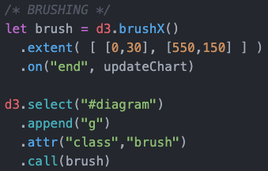
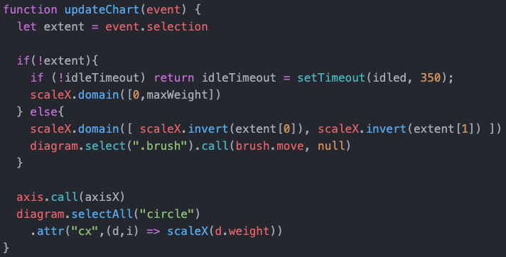

Now we use an updated dataset. In the chart, there is now a lot of data in a small space, so that we can hardly see any differences. We now want to be able to select and enlarge this area. We can do this with the Brush-function of d3:
With d3.brushX() we define, that we want to brush only in the X direction, with .extent() we define the area, that is brushable. And the "end"-event is fired, when the cursor-button is released.
After defining this, we have to call this created brush and bind it to our diagram. So far we only have a selection, but we have not yet defined what should happen with this selection. We want to adapt the domain of the x-Axis to the region selected by the brush. Take a look:
The first thing is: We take a look at the event fired. We want two different behaviours: If we have a selection, then the graph should be adjusted to the selection, if we have a double click, the view should jump back to the starting position. This is what we check with if(!extent)
Then we have to bind the new scale to the axis with axis.call(axisX), and also move the fruits to the new position. This is what we have:
Now it is not easy and inutitive to understand how the graph changes. We want to change that in the next step: with transitions.